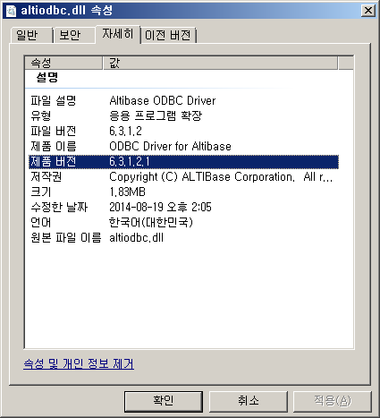

Version
All the versions of Altibase
Symptom
The following error message is recorded in the Altibase trace log altibase_boot.log below and in $ALTIBASE_HOME/trc/altibase_boot.log.
ERR-7101d(errno=0) Protocol header error.(TCP 127.0.0.1:13036) Protocol processing failed. Close connection...
Cause
The description of the error can be checked using the altierr utility as follows.
$ altierr 0x7101D
0x7101D ( 462877) cmERR_ABORT_PROTOCOL_HEADER_ERROR Protocol header error.(<0%s>)
# *Cause: Protocol header error
# *Action: Please send a bug report to the vendor.
This error is a message recorded in the server's altibase_boot.log when an incompatible version of the Altibase server attempts to connect to the server.
This message leaves history and does not affect the operation of the Altibase server.
Solution
If this error message continues to be logged, find the client trying to connect and reinstall the client with a version compatible with the server.
Reference
In the versions below Altibase version 5.3.3, the server and the client must have the same cm protocol version to connect from the client to the server.
From version 5.3.3 or higher of Altibase, backward compatibility between the server and the client is guaranteed, so that regardless of the cm protocol version, the client can connect to the server of the same version or higher version.
However, in the opposite case, that is, if the version of the client is higher than that of the server, the connection is not made.
The version referred to here means the first 3 digits of the product version. (The patch version of the 4th digit or less does not matter when checking the version.)
# Connection example according to server and client version
| Server version | Client version | Connection result | Remark |
|---|---|---|---|---|
Server Version> Client Version | 6.3.1 | 5.3.3 | Successful | Backward compatibility guaranteed in version 5.3.3 or later |
Server Version> Client Version | 6.3.1 | 4.3.9 | Failed | Backward compatibility guaranteed when both server and client are version 5.3.3 or later. |
Server version <client version | 6.1.1 | 6.3.1 | Failed | If the client version is high, the connection fails regardless of the Altibase version. |
# How to check server and client version
How to check the server version
$ altibase -v
version 5.1.5.68 XEON_LINUX_redhat_Enterprise_AS4-64bit-5.1.5.68-release-GCC3.4.6 (xeon-redhat-linux-gnu) Jan 5 2010 21:17:22, binary db version 5.1.2, meta version 5.3.3, cm protocol version 5.4.5, replication protocol version 5.2.1How to check the client version
# 5.3.3 or earlier
$ sesc -v
SES C/C++ Precompiler 3 Ver 5.1.5.68 XEON_LINUX_redhat_Enterprise_AS4-64bit-5.1.5.68-release-GCC3.4.6 (xeon-redhat-linux-gnu) Jan 5 2010 21:17:22
# 5.3.3 or later
$ apre -v
Altibase Precompiler2(APRE) Ver.1 6.3.1.0.9 X86_64_LINUX_redhat_Enterprise_ES4-64bit-6.3.1.0.9-release-GCC3.4.6 (x86_64-unknown-linux-gnu) Mar 20 2014 18:19:25How to check the version using JDBC Driver
$ java -jar $ALTIBASE_HOME/lib/Altibase.jar
JDBC Driver Info : Altibase Ver = 6.3.1.0.9 for JavaVM v1.4, CMP:7.1.1, Mar 20 2014 17:07:25How to check version using ODBC library in WINDOWS environment
In the lib directory under the Altibase installation directory (e.g. C:\Program Files (x86)\Altibase\altibase-server-6.3.1)
altiodbc.dll -> Properties -> Details -> Product version
{kind=link}